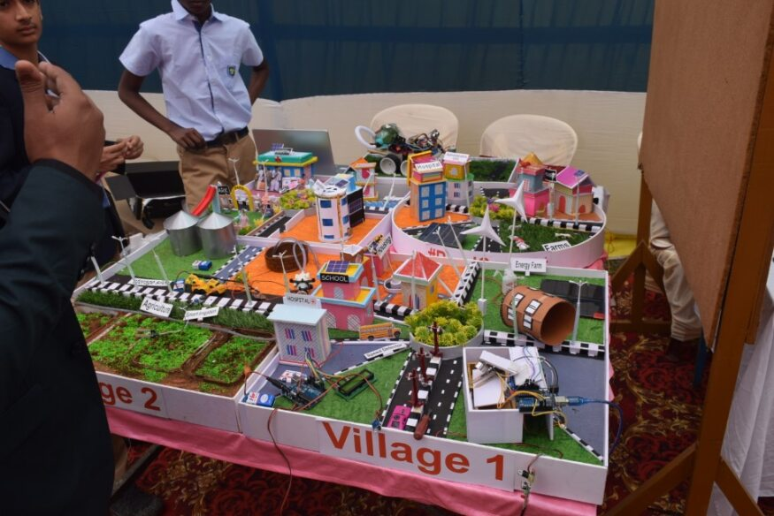

RuralConnect
Led a three-person team building a smart-village systems concept spanning AI, sensors, Raspberry Pi, Arduino, and real-world community utility.
Raspberry Pi
Arduino
AI/IoT
Sensors
STUDENT RESEARCHER · AI DEVELOPER · BUILDER
Student Researcher · AI Developer · Builder
Building intelligent systems and quantitative research for real-world problems.
ADMISSIONS QUICK PATH
PROOF AT A GLANCE
WORK
Led a three-person team building a smart-village systems concept spanning AI, sensors, Raspberry Pi, Arduino, and real-world community utility.

Built a custom accessibility-focused Indian Sign Language system using MediaPipe and TensorFlow Lite with offline capability and practical deployment in a social-impact context.
TECHNICAL ARCHIVE
Independent builds in computer vision, tracking, object detection, and interactive systems.
Computer-vision experimentation around tracking, interaction, and responsive gameplay.
Programs and service work shaped by practical impact and sustained engagement.
RESEARCH
IMPACT
Built and sustained a quantitative-literacy program for 40+ students, covering percentages, interest, data interpretation, and applied problem solving in a long-term weekly commitment.
40+ students · weekly engagement OPEN HEAL RECOMMENDATION ↗Served in escalating student leadership roles, bridging communication between students and school staff and supporting practical school operations and lab access.
House Captain → STEM Secretary → Head BoyBuilt a sustained reading movement across apartments, clubs, and libraries, creating a visible reading culture and broad community reach.
2+ years · 15 newspaper outletsRECOMMENDATIONS
EVIDENCE
COMPLETE CERTIFICATE ARCHIVE
GITHUB
Sample-only repositories are intentionally excluded from this archive to keep the portfolio focused.
MEDIA
ABOUT
I work at the intersection of AI, data science, quantitative research, engineering, and accessibility. My projects are built to solve real problems, not simply to demonstrate technical flair.
My strongest work sits across computer vision, machine learning, applied research, and community-building programs where learning must be visible, useful, and documented.
ACADEMIC RIGOR
The school did not offer Economics, so I asked to take the course and the school declined. I was simultaneously completing the CBSE curriculum and preparing for JEE, so I chose AP Microeconomics as a deliberate additional economics-rigor choice rather than taking a large AP course load.
CONTACT
Public work starts with GitHub and evidence. Private contact details can be added as needed without changing the admissions-first structure.